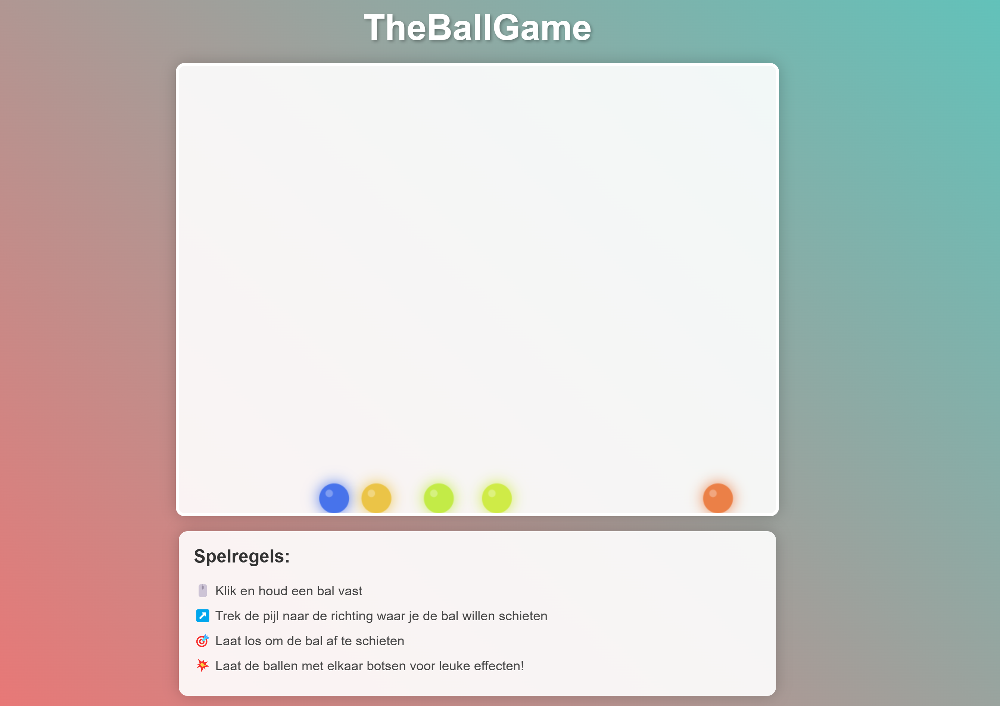
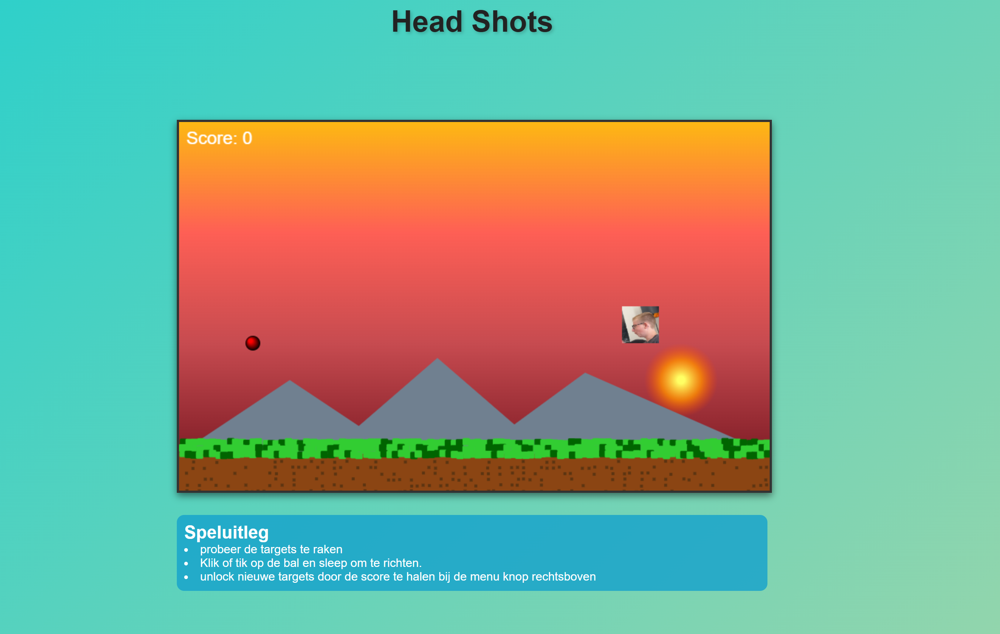
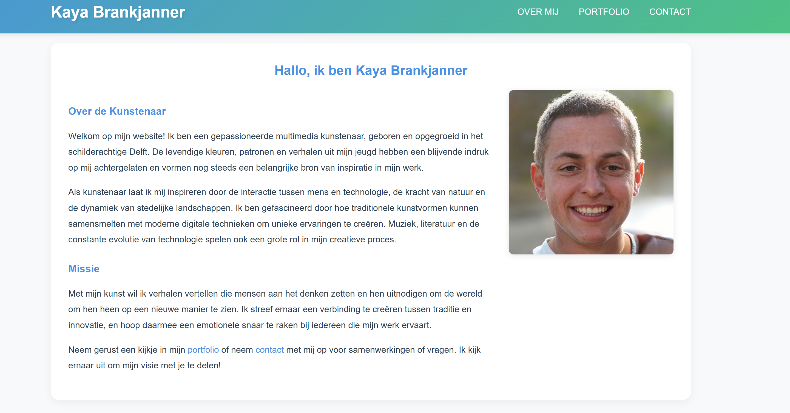
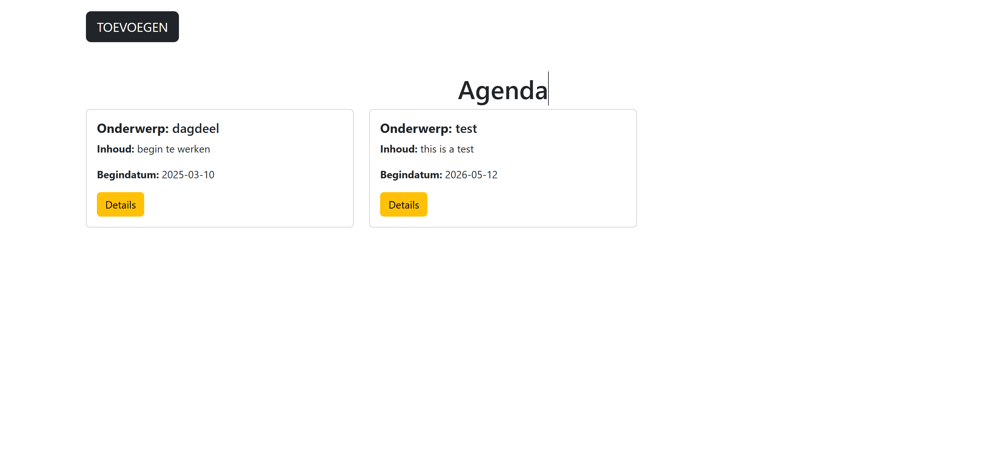
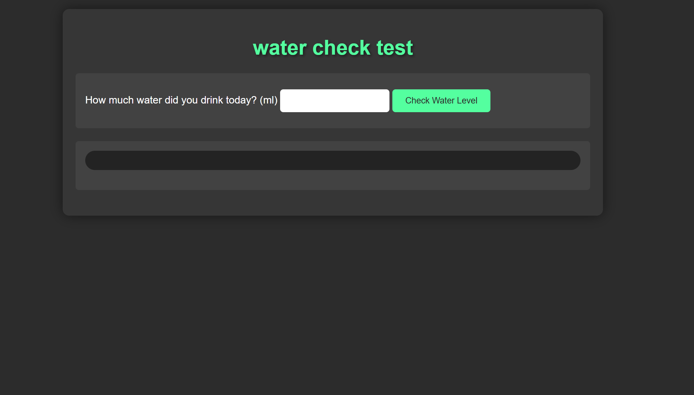

Mijn Projecten

TheBallGame
Hier heb ik in mijn vrije tijd een spelletje gemaakt. Dit spel heeft geen einddoel, maar je kan een balletje door het scherm heen gooien
HTML
CSS
JavaScript
Bekijk Project

AimShots
Dit is een spel dat gemaakt is als grap voor mijn vrienden groep het doel is om de target te raken met de bal en nieuwe targets te ontgrendelen.
HTML
CSS
JavaScript
Bekijk Project

Frontend Examen
Een innovatieve webapplicatie met focus op gebruiksvriendelijkheid en moderne technologieën. deze website is gemaakt voor mijn frontend examen die ik heb gehaalt met een 9
HTML
CSS
JavaScript
Responsive Design
Bekijk Project

CRUD agenda
een school project waarbij we een agenda moesten maken volgens de CRUD methode.
PHP
PhpMyAdmin
MySQL
Bekijk Project

WaterCheck
Dit is een opdracht van school waarbij we een nutteloze website moesten maken. je moet hier taal oncijferen om te weten hoeveel water je nog moet drinken
HTML
CSS
JavaScript
Bekijk Project